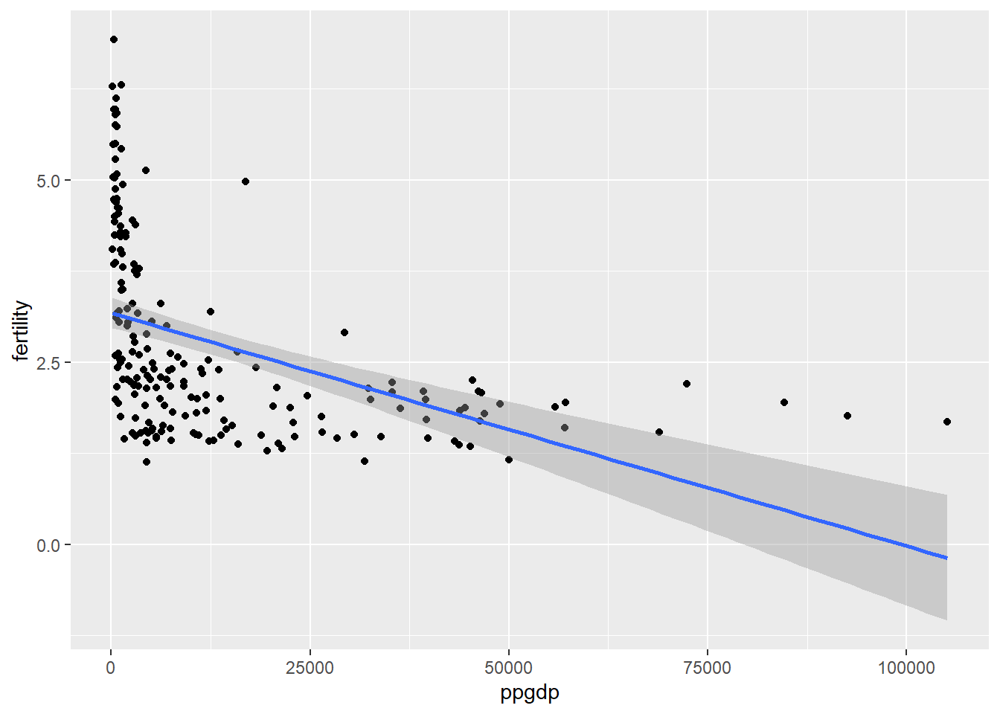
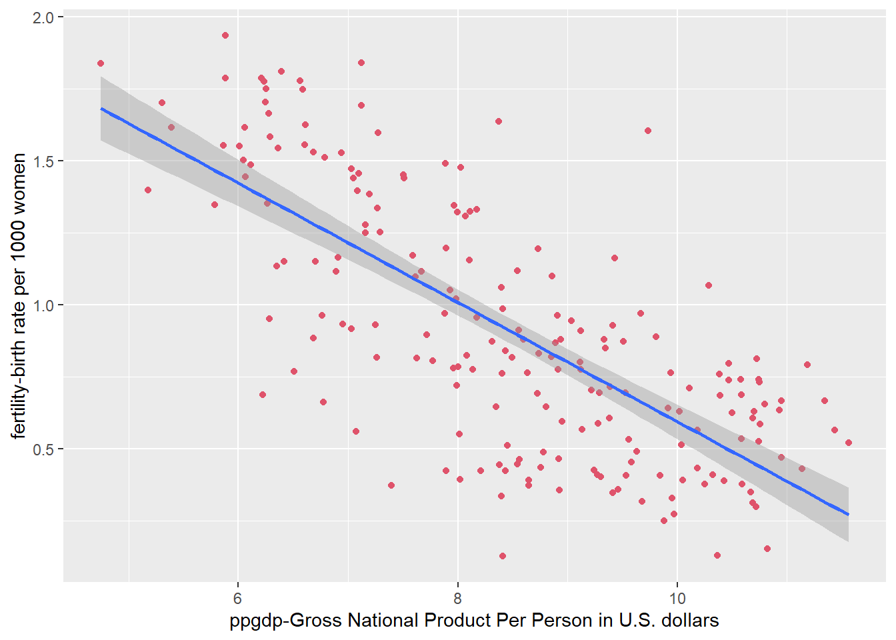
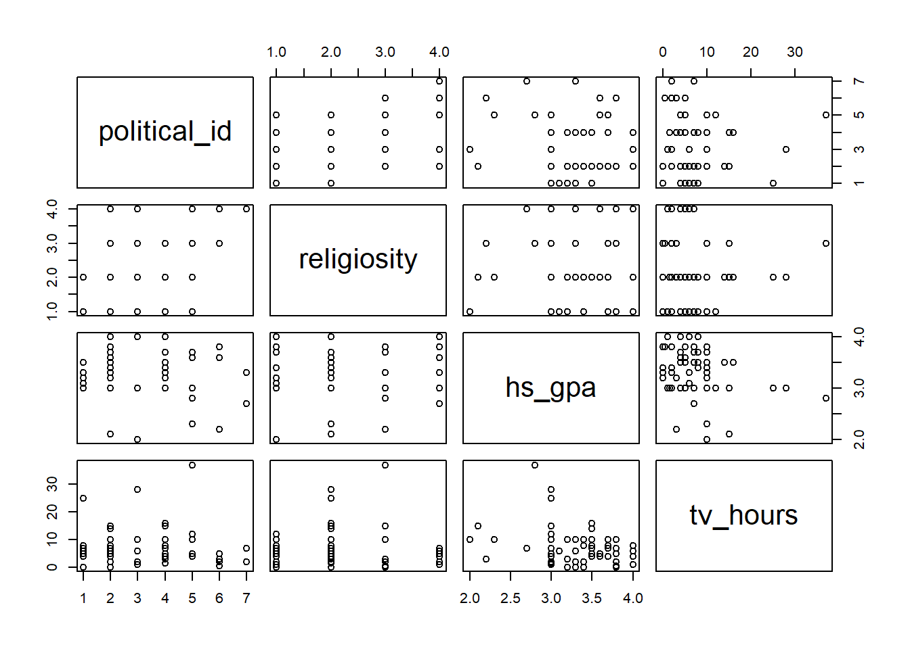
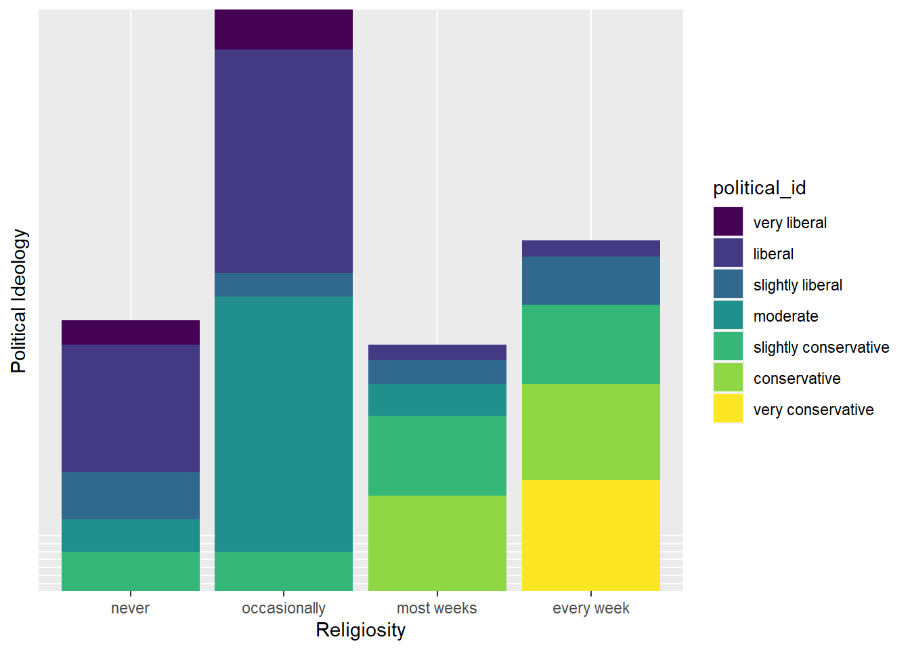
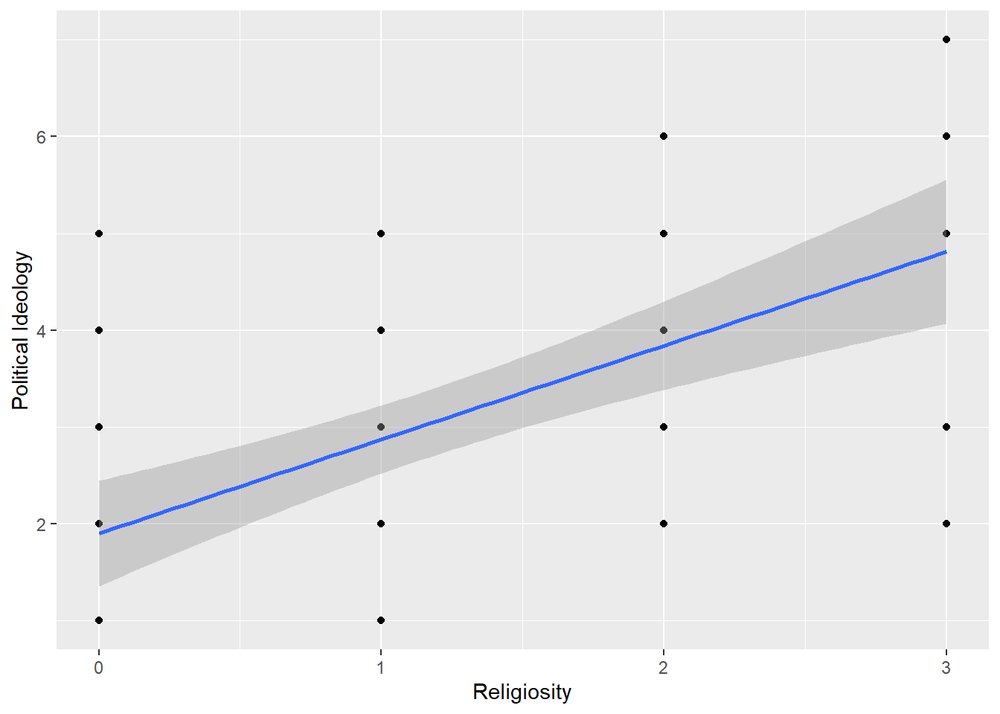
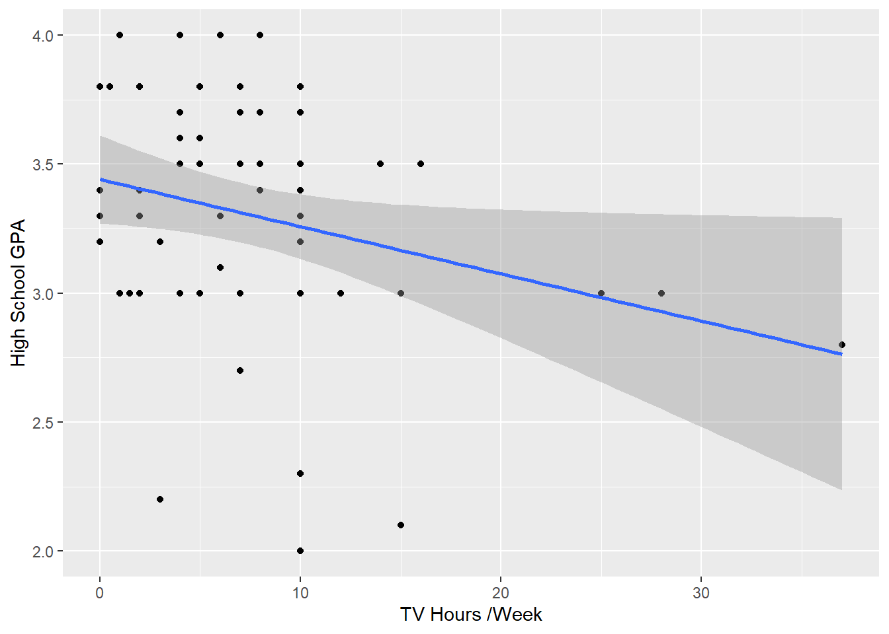

Code
library(tidyverse)
library(knitr)
library(alr4)
library(smss)
library(fastDummies)
knitr::opts_chunk$set(echo = TRUE)library(tidyverse)
library(knitr)
library(alr4)
library(smss)
library(fastDummies)
knitr::opts_chunk$set(echo = TRUE)United Nations (Data file: UN11in alr4) The data in the file UN11 contains several variables, including ppgdp, the gross national product per person in U.S. dollars, and fertility, the birth rate per 1000 females, both from the year 2009. The data are for 199 localities, mostly UN member countries, but also other areas such as Hong Kong that are not independent countries. The data were collected from the United Nations (2011). We will study the dependence of fertility on ppgdp.
1.1.1. Identify the predictor and the response.
1.1.2 Draw the scatterplot of fertility on the vertical axis versus ppgdp on the horizontal axis and summarize the information in this graph. Does a straight-line mean function seem to be plausible for a summary of this graph?
1.1.3 Draw the scatterplot of log(fertility) versus log(ppgdp) using natural logarithms. Does the simple linear regression model seem plausible for a summary of this graph? If you use a different base of logarithms, the shape of the graph won’t change, but the values on the axes will change.
attach(UN11)
un <- UN11
head(un) region group fertility ppgdp lifeExpF pctUrban
Afghanistan Asia other 5.968 499.0 49.49 23
Albania Europe other 1.525 3677.2 80.40 53
Algeria Africa africa 2.142 4473.0 75.00 67
Angola Africa africa 5.135 4321.9 53.17 59
Anguilla Caribbean other 2.000 13750.1 81.10 100
Argentina Latin Amer other 2.172 9162.1 79.89 93#Check correlation
cor.test(UN11$ppgdp,UN11$fertility)
Pearson's product-moment correlation
data: UN11$ppgdp and UN11$fertility
t = -6.877, df = 197, p-value = 7.903e-11
alternative hypothesis: true correlation is not equal to 0
95 percent confidence interval:
-0.5456842 -0.3205140
sample estimates:
cor
-0.4399891 There is a weak, negative correlation between fertility and ppGDP.
#Check matrix plot
pairs(UN11)
The relationship of per person GDP to fertility looks somewhat curvy, which indicates diminishing returns on fertility from increasing GDP.
#Linear regression
summary(lm(fertility ~ ppgdp, data = UN11))
Call:
lm(formula = fertility ~ ppgdp, data = UN11)
Residuals:
Min 1Q Median 3Q Max
-1.9006 -0.8801 -0.3547 0.6749 3.7585
Coefficients:
Estimate Std. Error t value Pr(>|t|)
(Intercept) 3.178e+00 1.048e-01 30.331 < 2e-16 ***
ppgdp -3.201e-05 4.655e-06 -6.877 7.9e-11 ***
---
Signif. codes: 0 '***' 0.001 '**' 0.01 '*' 0.05 '.' 0.1 ' ' 1
Residual standard error: 1.206 on 197 degrees of freedom
Multiple R-squared: 0.1936, Adjusted R-squared: 0.1895
F-statistic: 47.29 on 1 and 197 DF, p-value: 7.903e-11The R squared in our linear model is very low 0.19, suggesting a non-linear relationship.
Let’s have a closer look of the dependence of fertility on ppGDP
#Plot variables
plot( x= UN11$ppgdp, y= UN11$fertility)
This graph is a nice visual representation of our negative correlation, because it shows as ppGPD rises, there are fewer and fewer births per 1000 females
But the relationship does not appear linear.
#Plot variables with linear regrssion
ggplot(data = UN11, aes(x = ppgdp, y = fertility)) +
geom_point() +
geom_smooth(method = 'lm')`geom_smooth()` using formula 'y ~ x'
As we could have predicted, a linear explanation does not exist here. There are very large residuals and the predicted value of fertility after about 60,000 ppgdp enter negative values. Since we can’t have negative births and we do have ppgdp values over 60,000, we should explore a better model to explain this relationship.
#Plot regression of variable logarithms
ggplot(UN11, aes(x = log(ppgdp), y = log(fertility))) +
geom_point(color=2) +
geom_smooth(method = "lm") +
labs(x="ppgdp-Gross National Product Per Person in U.S. dollars", y="fertility-birth rate per 1000 women")`geom_smooth()` using formula 'y ~ x'
A linear regression for the logarithms of each variable appears to be much more appropriate.
Annual income, in dollars, is an explanatory variable in a regression analysis. For a British version of the report on the analysis, all responses are converted to British pounds sterling (1 pound equals about 1.33 dollars, as of 2016).
If all explanatory values are converted (multiplied) to another number - British pounds - the slope of the prediction equation will change. Since the rate is x 1.33, multiplying by a positive number should make the slope steeper.
The correlation would not change if only the units of measurement are different. The values in relation to the predictor variable would remain the same.
Water runoff in the Sierras (Data file: water in alr4) Can Southern California’s water supply in future years be predicted from past data? One factor affecting water availability is stream runoff. If runoff could be predicted, engineers, planners, and policy makers could do their jobs more efficiently. The data file contains 43 years’ worth of precipitation measurements taken at six sites in the Sierra Nevada mountains (labeled APMAM, APSAB, APSLAKE, OPBPC, OPRC, and OPSLAKE) and stream runoff volume at a site near Bishop, California, labeled BSAAM. Draw the scatterplot matrix for these data and summarize the information available from these plots.
#Load data
data("water")
head(water) Year APMAM APSAB APSLAKE OPBPC OPRC OPSLAKE BSAAM
1 1948 9.13 3.58 3.91 4.10 7.43 6.47 54235
2 1949 5.28 4.82 5.20 7.55 11.11 10.26 67567
3 1950 4.20 3.77 3.67 9.52 12.20 11.35 66161
4 1951 4.60 4.46 3.93 11.14 15.15 11.13 68094
5 1952 7.15 4.99 4.88 16.34 20.05 22.81 107080
6 1953 9.70 5.65 4.91 8.88 8.15 7.41 67594#Check matrix plot
pairs(water, col = 4,main = "Water Runoff in Sierras")#Multiple regression
wat <- (lm(BSAAM ~ APMAM + APSAB + APSLAKE + OPBPC + OPRC + OPSLAKE, data = water))
summary(wat)
Call:
lm(formula = BSAAM ~ APMAM + APSAB + APSLAKE + OPBPC + OPRC +
OPSLAKE, data = water)
Residuals:
Min 1Q Median 3Q Max
-12690 -4936 -1424 4173 18542
Coefficients:
Estimate Std. Error t value Pr(>|t|)
(Intercept) 15944.67 4099.80 3.889 0.000416 ***
APMAM -12.77 708.89 -0.018 0.985725
APSAB -664.41 1522.89 -0.436 0.665237
APSLAKE 2270.68 1341.29 1.693 0.099112 .
OPBPC 69.70 461.69 0.151 0.880839
OPRC 1916.45 641.36 2.988 0.005031 **
OPSLAKE 2211.58 752.69 2.938 0.005729 **
---
Signif. codes: 0 '***' 0.001 '**' 0.01 '*' 0.05 '.' 0.1 ' ' 1
Residual standard error: 7557 on 36 degrees of freedom
Multiple R-squared: 0.9248, Adjusted R-squared: 0.9123
F-statistic: 73.82 on 6 and 36 DF, p-value: < 2.2e-16Analysis: The P-values are not very small across the board. Only OPRC and OPSLAKE have p-values of significance, under 0.05. This shows us that individually, the location precipitation do would not make good explanatory variables.
However, the model as a whole has a p-value of < 2.2e-16, indicating it is statistically significant. Also, while the residuals have a wide range (-12690 to 18542), the 1Q (-4936) and 3Q (4173) are fairly close in absolute value. Therefore, the range may be due to some outliars. The adjusted R-squared (0.9123) tells us that 91% of the variation of runoff can be explained by combined location precipitation.
With a strong p-value, decent residuals, and a high adjusted R-squared tells us this model could appropriately be used to predict runoff volume near Bishop, California.
Professor ratings (Data file: Rateprof in alr4) In the website and online forum RateMyProfessors.com, students rate and comment on their instructors. Launched in 1999, the site includes millions of ratings on thousands of instructors. The data file includes the summaries of the ratings of 364 instructors at a large campus in the Midwest (Bleske-Rechek and Fritsch, 2011). Each instructor included in the data had at least 10 ratings over a several year period. Students provided ratings of 1–5 on quality, helpfulness, clarity, easiness of instructor’s courses, and raterInterest in the subject matter covered in the instructor’s courses. The data file provides the averages of these five ratings. Create a scatterplot matrix of these five variables. Provide a brief description of the relationships between the five ratings.
#Load data
data("Rateprof")
#Select 5 variables in question
rateprof <- Rateprof %>%
select("quality","helpfulness","clarity","easiness","raterInterest")
#Create table of ratings
kable(head(rateprof), format = "markdown", digits = 10, col.names = c('Quality','Helpfulness','Clarity', 'Easiness', 'Rater Interest'), caption = "**Professor Ratings**")| Quality | Helpfulness | Clarity | Easiness | Rater Interest |
|---|---|---|---|---|
| 4.636364 | 4.636364 | 4.636364 | 4.818182 | 3.545455 |
| 4.318182 | 4.545455 | 4.090909 | 4.363636 | 4.000000 |
| 4.790698 | 4.720930 | 4.860465 | 4.604651 | 3.432432 |
| 4.250000 | 4.458333 | 4.041667 | 2.791667 | 3.181818 |
| 4.684211 | 4.684211 | 4.684211 | 4.473684 | 4.214286 |
| 4.233333 | 4.266667 | 4.200000 | 4.533333 | 3.916667 |
pairs(rateprof, col = 2,main = "Professor Ratings")Quality, helpfulness, and clarity all appear to have strong positive linear correlations with one another. There is a moderate positive linear correlation between easiness and clarity, helpfulness, and quality. There is also a moderate positive correlation between rater interest and quality, helpfulness, and clarity. There is a weak positive linear correlation between easiness and rater interest.
#Check the calculated correlations
cor(rateprof, use = "complete.obs",method = c("pearson", "kendall", "spearman")) quality helpfulness clarity easiness raterInterest
quality 1.0000000 0.9810314 0.9759608 0.5651154 0.4706688
helpfulness 0.9810314 1.0000000 0.9208070 0.5635184 0.4630321
clarity 0.9759608 0.9208070 1.0000000 0.5358884 0.4611408
easiness 0.5651154 0.5635184 0.5358884 1.0000000 0.2052237
raterInterest 0.4706688 0.4630321 0.4611408 0.2052237 1.0000000Our correlation calculations reinforce our interpretation of the relationships based on the scatter plots.
For the student.survey data file in the smss package, conduct regression analyses relating (by convention, y denotes the outcome variable, x denotes the explanatory variable) (i) y = political ideology and x = religiosity, (ii) y = high school GPA and x = hours of TV watching.
(a)Graphically portray how the explanatory variable relates to the outcome variable in each of the two cases (b) Summarize and interpret results of inferential analyses.
data("student.survey")
dim(student.survey)[1] 60 18head(student.survey) subj ge ag hi co dh dr tv sp ne ah ve pa pi re
1 1 m 32 2.2 3.5 0 5.0 3 5 0 0 FALSE r conservative most weeks
2 2 f 23 2.1 3.5 1200 0.3 15 7 5 6 FALSE d liberal occasionally
3 3 f 27 3.3 3.0 1300 1.5 0 4 3 0 FALSE d liberal most weeks
4 4 f 35 3.5 3.2 1500 8.0 5 5 6 3 FALSE i moderate occasionally
5 5 m 23 3.1 3.5 1600 10.0 6 6 3 0 FALSE i very liberal never
6 6 m 39 3.5 3.5 350 3.0 4 5 7 0 FALSE d liberal occasionally
ab aa ld
1 FALSE FALSE FALSE
2 FALSE FALSE NA
3 FALSE FALSE NA
4 FALSE FALSE FALSE
5 FALSE FALSE FALSE
6 FALSE FALSE NA#Select variable in question
ssurvey <- student.survey %>%
select(c(pi, re, hi, tv))%>%
rename(political_id = pi, religiosity = re, hs_gpa = hi, tv_hours = tv)
#Check for missing data
is.na(ssurvey) %>% head() political_id religiosity hs_gpa tv_hours
[1,] FALSE FALSE FALSE FALSE
[2,] FALSE FALSE FALSE FALSE
[3,] FALSE FALSE FALSE FALSE
[4,] FALSE FALSE FALSE FALSE
[5,] FALSE FALSE FALSE FALSE
[6,] FALSE FALSE FALSE FALSEFortunately, we have no missing data.
#Summarize our df to understand responses and value ranges
summary(ssurvey) political_id religiosity hs_gpa tv_hours
very liberal : 8 never :15 Min. :2.000 Min. : 0.000
liberal :24 occasionally:29 1st Qu.:3.000 1st Qu.: 3.000
slightly liberal : 6 most weeks : 7 Median :3.350 Median : 6.000
moderate :10 every week : 9 Mean :3.308 Mean : 7.267
slightly conservative: 6 3rd Qu.:3.625 3rd Qu.:10.000
conservative : 4 Max. :4.000 Max. :37.000
very conservative : 2 #Explore variable relationships
pairs(ssurvey)
Let’s take a close look at (i) y = political ideology and x = religiosity.
#Visualize religiosity as an explanatory variable for political ideology
ggplot(ssurvey, aes(x = religiosity, y= political_id,fill= political_id)) +
geom_bar(stat = "identity")+
labs(x="Religiosity", y="Political Ideology")+
theme(axis.text.y=element_blank(),
axis.ticks.y=element_blank())
This bar graph shows us what we might expect - that those who attend church every week identify with a very conservative political affiliation. On the contrary, people who never or occasionally go to church trend more liberal.
#Transform categorical data to numeric
ssurvey <- ssurvey %>%
mutate(pi_n = dplyr::recode(political_id,
"very liberal" = 1,
"liberal" = 2,
"slightly liberal" = 3,
"moderate" = 4,
"slightly conservative" = 5,
"conservative" = 6,
"very conservative" = 7
)) %>%
mutate(re_n = dplyr::recode(religiosity,
"never" = 0,
"occasionally" = 1,
"most weeks" = 2,
"every week" = 3
))
glimpse(ssurvey)Rows: 60
Columns: 6
$ political_id <ord> conservative, liberal, liberal, moderate, very liberal, l…
$ religiosity <ord> most weeks, occasionally, most weeks, occasionally, never…
$ hs_gpa <dbl> 2.2, 2.1, 3.3, 3.5, 3.1, 3.5, 3.6, 3.0, 3.0, 4.0, 2.3, 3.…
$ tv_hours <dbl> 3, 15, 0, 5, 6, 4, 5, 5, 7, 1, 10, 14, 6, 3, 4, 7, 6, 5, …
$ pi_n <dbl> 6, 2, 2, 4, 1, 2, 2, 2, 1, 3, 5, 2, 1, 4, 1, 2, 3, 2, 2, …
$ re_n <dbl> 2, 1, 2, 1, 0, 1, 1, 1, 1, 0, 1, 1, 1, 1, 0, 3, 3, 0, 0, …#Visualize linearity
ggplot(data = ssurvey, aes(x = re_n, y = pi_n)) +
geom_point() +
geom_smooth(method = 'lm')+
labs(x="Religiosity", y="Political Ideology")`geom_smooth()` using formula 'y ~ x'
After recoding our variable values, political ideology now spans from 1 to 7 with 1 being very liberal and 7 being very conservative. Religiosity spans 0 to 3 with 0 being never attending church and 3 representing attends every week.
#Linear regression summary
(summary(rel_pol <- lm(formula = pi_n ~ re_n, data = ssurvey)))
Call:
lm(formula = pi_n ~ re_n, data = ssurvey)
Residuals:
Min 1Q Median 3Q Max
-2.81243 -0.87160 0.09882 1.12840 3.09882
Coefficients:
Estimate Std. Error t value Pr(>|t|)
(Intercept) 1.9012 0.2717 6.997 2.97e-09 ***
re_n 0.9704 0.1792 5.416 1.22e-06 ***
---
Signif. codes: 0 '***' 0.001 '**' 0.01 '*' 0.05 '.' 0.1 ' ' 1
Residual standard error: 1.345 on 58 degrees of freedom
Multiple R-squared: 0.3359, Adjusted R-squared: 0.3244
F-statistic: 29.34 on 1 and 58 DF, p-value: 1.221e-06Interpretation: The residuals of this regression are fairly symmetrical, but they are not very small in relation to our data values. The coefficients tells us that for every 1 unit of increase in political affiliation (ie. 1 category closer to very conservative), there is an estimated 0.9704 increase in religiosity (ie. almost one category closer to every week). The t-values are moderately large, which indicates a relationship exists. With very small p-values, it is unlikely the relationship is due to chance. Therefore, we could reject the null and conclude there is a relationship between religiosity and political affiliation.
However, as the ggplot graph, the high residuals, and the R2 (0.3359) tell us, this model is not a perfect fit for this data. It is likely due to the categorical nature of the explanatory variable that partitions our data into column-like sections in a graph. That is hard to run a straight line through. This model shows about 33% of the variance can be explained by the predictor. There may be other variable that need to be controlled for or added to the analysis to complete a well-fitting model.
Now, let’s take a close look at (ii) y = high school GPA and x = hours of TV watching.
#Visualize hours per week watching tv as an explanatory variable for high school GPA
ggplot(data = ssurvey, aes(x = tv_hours, y = hs_gpa)) +
geom_point() +
geom_smooth(method = 'lm')+
labs(x="TV Hours /Week", y="High School GPA")`geom_smooth()` using formula 'y ~ x'
summary(lm(hs_gpa ~ tv_hours, data = ssurvey))
Call:
lm(formula = hs_gpa ~ tv_hours, data = ssurvey)
Residuals:
Min 1Q Median 3Q Max
-1.2583 -0.2456 0.0417 0.3368 0.7051
Coefficients:
Estimate Std. Error t value Pr(>|t|)
(Intercept) 3.441353 0.085345 40.323 <2e-16 ***
tv_hours -0.018305 0.008658 -2.114 0.0388 *
---
Signif. codes: 0 '***' 0.001 '**' 0.01 '*' 0.05 '.' 0.1 ' ' 1
Residual standard error: 0.4467 on 58 degrees of freedom
Multiple R-squared: 0.07156, Adjusted R-squared: 0.05555
F-statistic: 4.471 on 1 and 58 DF, p-value: 0.03879Interpretation: This model shows fairly symmetrical residuals, but some are very large. This can be seen on our plot where lower hours of tv has a wide range of associated GPS values. The p-value of 0.0388 allows us to reject the null hypothesis and conclude there is a relationship between tv hours and gpa. However, with a VERY small R-squared, this model may not be best at predicting gpa SOLELY from hours of tv watched per week. The combination of all our calculations lead me to conclude that higher number of hours watched per week may be related to lower GPA. However, the opposite may not be true - fewer hours of tv is not necessarily associated with higher a higher GPA
cor.test(ssurvey$tv_hours, ssurvey$hs_gpa)
Pearson's product-moment correlation
data: ssurvey$tv_hours and ssurvey$hs_gpa
t = -2.1144, df = 58, p-value = 0.03879
alternative hypothesis: true correlation is not equal to 0
95 percent confidence interval:
-0.48826914 -0.01457694
sample estimates:
cor
-0.2675115 There is a weak negative correlation between hours of tv watched per week and high school GPA.